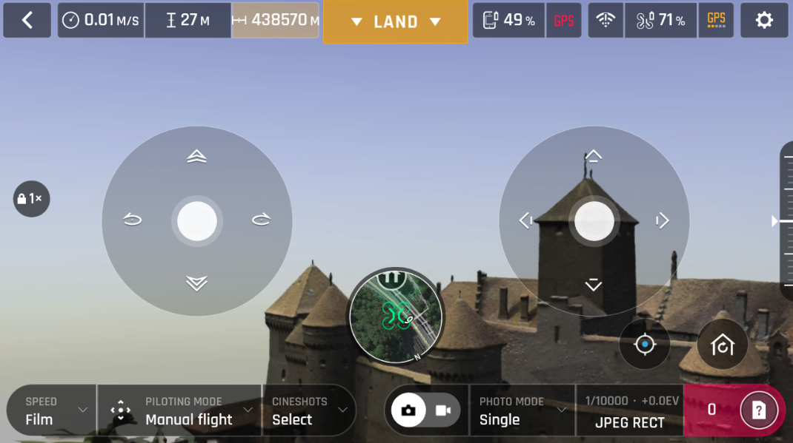
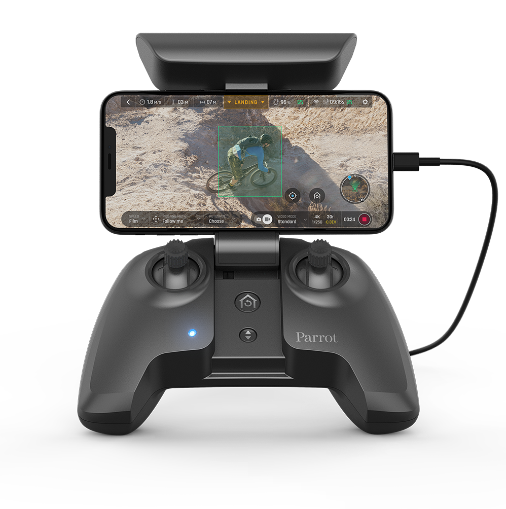
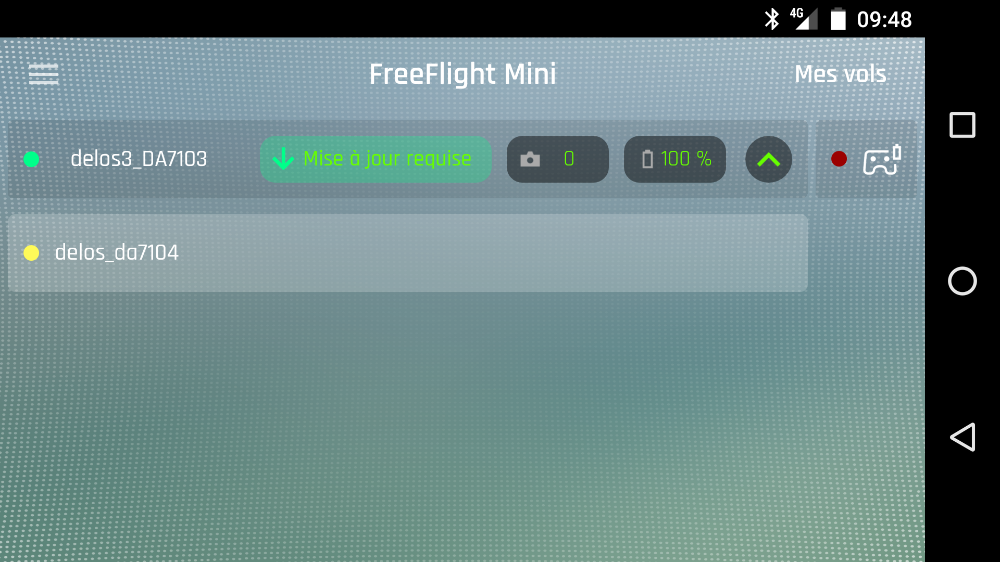

How to connect to the simulated drone¶
Once a simulation got launched, a drone is lying in the middle of the scene, waiting to be connected by a controller.
Depending on the drone model, the connection is achieved using various physical links. The table below shows the supported link(s) for each drone model.
drone |
virtual ethernet |
wifi |
bluetooth |
|---|---|---|---|
Airborne |
no |
no |
yes |
Anafi4k |
yes |
yes |
no |
Bebop |
yes |
yes |
no |
Bebop2 |
yes |
yes |
no |
Disco |
yes |
yes |
no |
Mambo |
no |
no |
yes |
Swing |
no |
no |
yes |
Bluegrass |
yes |
yes |
no |
You might want to check the Take off and hints, drone by drone page for detailed information on each drone requirements and capabilities.
Wifi link¶
Note that the wifi link is active only if:
you have a wifi hardware compatible with Parrot-Sphinx (see system requirements (wifi))
you properly set the XML element
stolen_interfacein thedronesection of your .drone file
Parrot-Sphinx takes over the wifi interface and provides it to the simulated firmware. The firmware runs an instance of hostapd, which creates a wifi Access Point. Then, the simulated drone gets connectable by any wifi device implementing the ARDroneSDK3 or GroundSDK stack.
The discovery works exactly the same way as for a real drone. For example, to connect with a simulated Anafi, just choose the SSID “Anafi_PC_xxxxxx”, where xxxxxx is a hashcode related to the wifi MAC address.
Once connected, the drone can be controlled exactly like in real life. Here is what you get with Freeflight 6.
{kind=link}
How to connect to a Skycontroller¶
{kind=link}
In your .drone file, the drone description has to contain the following:
the IP address provided in stolen_interface must be 192.168.42.1 so to be in the same subnetwork as the Skycontroller.
Skycontrollers do not support 5GHz wifi bandwidth. Therefore, if your wifi hardware does support this bandwidth, you need to force the use of 2.4 GHz channel. To achieve that, just add the
wifi_channelproperty with a value arbitrarily taken between 1 and 13, as follows:
<drone>
....
<wifi_channel>6</wifi_channel>
</drone>
Virtual ethernet¶
Parrot-Sphinx creates a virtual ethernet interface on host side as well as in the
simulated drone. On host side, the interface is generally called fd_veth0
and has the IP address 10.202.0.254. On drone side, it is called eth1 (see
‘interface’ element in the .drone file) and gets the IP address 10.202.0.1.
To use the virtual ethernet link, the controller application should run on the host so that the local interface is accessible. If you really need to run the controller application from another machine belonging to the same IP network, you need to activate the port forwarding mode, by using the following command line option.
$ sphinx --port-forwarding=<remote_machine_IP_address> <my.drone>
Note: Be aware that port forwarding only works if the required ports are not already taken by another process running on the host.
Now, using the appropriate API, you just need to indicate to the SDK stack what is the drone IP address to connect:
either
10.202.0.1, if the controller application is running directly on the host.or the IP address of the host, if the port forwarding mode is activated.
Bluetooth¶
Several drone models only accept to be connected via a Bluetooth link. To be able to connect by Bluetooth, you need a compatible Bluetooth hardware. Please check the page system requirements (bluetooth) for more details.
The drone section of your .drone file needs an element stolen_bdaddr
properly set, meaning that it expects the Bluetooth MAC address of the host. You
can easily find it by entering the command:
$ hciconfig
hci0: Type: BR/EDR Bus: USB
BD Address: 00:1A:7D:DA:71:03 ACL MTU: 310:10 SCO MTU: 64:8
UP RUNNING
RX bytes:676 acl:0 sco:0 events:47 errors:0
TX bytes:2703 acl:0 sco:0 commands:47 errors:0
Once your .drone file is set and the Bluetooth hardware ready, just launch Parrot-Sphinx. The simulated firmware should be connectable through Bluetooth Low Energy from a device implementing ARDroneSDK3 or GroundSDK stack.
Testing with Freeflight Mini is of course possible, exactly as if you were trying to connect to a real drone.
{kind=link}
To retrieve the bluetooth identifier (UUID) of the simulated drone, you must first obtain the identifier of your running firmware instance:
$ fdc list instances
Then, enter the following command:
$ fdc show instances <instance_name> | grep cmdline | sed 's/ /\n/g' | awk -F= '$1 ~ /ro.sphinx.btfriendlyname/{print $2}'